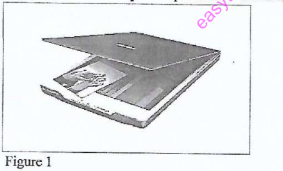

DIPLOMA IN INFORMATION COMMUNICATION TECHNOLOGY
July 2022
INSTRUCTIONS TO CANDIDATES
This paper consists of EIGHT questions.
Answer any FIVE of the EIGHT questions in the answer booklet provided.
Candidates should answer the questions in English.
1.
(a) Outline four benefits of time management skills to a student. (4 marks)
Sample Answer:
- Improved academic performance: Effective time management helps students allocate sufficient time for studying, leading to better understanding and grades.
- Reduced stress and anxiety: Planning and managing time effectively reduces the feeling of being overwhelmed, thus lowering stress levels.
- Better work-life balance: Time management allows students to balance academic work with social life, hobbies, and personal commitments, promoting overall well-being.
- Enhanced organizational skills: Developing time management skills enhances a student's ability to organize tasks, prioritize activities, and meet deadlines, valuable skills for future careers.
(b) Describe three characteristics of data bus in a computer central processing unit (CPU). (6 marks)
Sample Answer:
- Width: The data bus width determines the number of bits that can be transferred simultaneously. A wider data bus (e.g., 64-bit) allows for faster data transfer compared to a narrower one (e.g., 32-bit), improving processing speed.
- Speed: Data buses operate at a specific clock speed, measured in Hertz (Hz). Higher clock speeds mean faster data transfer rates, contributing to quicker communication between the CPU and other components.
- Direction: Data buses can be unidirectional or bidirectional. A bidirectional data bus allows data to flow in both directions between the CPU and memory or peripherals, enabling efficient communication for both reading and writing data.
(c) Distinguish between a switch and a bridge computer network device. (4 marks)
Sample Answer:
Both switches and bridges are used to connect network segments, but they differ in functionality:
- Bridge: Operates at the Data Link Layer (Layer 2) of the OSI model. It forwards data packets based on MAC addresses. Bridges typically have fewer ports and are used to connect two network segments, reducing collision domains. They learn MAC addresses and filter traffic, but are less sophisticated than switches.
- Switch: Also operates at the Data Link Layer (Layer 2) but is more advanced than a bridge. Switches have multiple ports and can connect many network devices. They learn MAC addresses and forward traffic only to the port where the destination MAC address is located, significantly reducing collisions and improving network efficiency. Switches offer higher port density and faster performance compared to bridges.
(d) A supervisor uses reactive techniques to manage workplace conflicts. Explain three likely outcomes of this technique. (6 marks)
Sample Answer:
Reactive conflict management involves addressing conflicts after they have arisen. Three likely outcomes of using reactive techniques are:
- Escalation of conflict: By delaying intervention, minor conflicts can escalate into more significant issues. Employees may feel ignored or that their concerns are not valued, leading to increased frustration and animosity.
- Decreased productivity and morale: Unresolved conflicts can disrupt workflow, reduce team collaboration, and lower employee morale. Employees may become disengaged, and the work environment can become tense and unproductive.
- Damage to relationships: Reactive approaches often deal with symptoms rather than root causes. This can lead to superficial resolutions, and underlying issues remain, damaging interpersonal relationships and trust among team members over time.
2.
(a) Outline four challenges of online learning to a student. (4 marks)
Sample Answer:
- Technical issues: Reliable internet access and functional devices are essential for online learning. Students in areas with poor connectivity or without adequate technology may face significant barriers.
- Lack of face-to-face interaction: Online learning can reduce direct interaction with instructors and peers, potentially leading to feelings of isolation and hindering collaborative learning experiences.
- Self-discipline and motivation: Online learning requires a high degree of self-discipline and motivation as students need to manage their study time and stay engaged without constant external supervision.
- Digital literacy skills: Students need to be proficient in using various digital tools and platforms for online learning. Lack of digital literacy can be a significant challenge, especially for students less familiar with technology.
(b) Explain two positive impacts of ICT to a manufacturing company. (4 marks)
Sample Answer:
- Increased efficiency and productivity: ICT tools like automation systems, Computer-Aided Design (CAD), and Enterprise Resource Planning (ERP) software streamline processes, reduce errors, and optimize resource utilization, leading to increased production efficiency and output.
- Improved communication and collaboration: ICT enables seamless communication and data sharing across different departments and locations within a manufacturing company, as well as with suppliers and customers. This enhances collaboration, speeds up decision-making, and improves supply chain management.
(c) Janet, an ICT student, suffers from depression. Describe three symptoms that she may exhibit. (6 marks)
Sample Answer:
- Persistent sadness or low mood: Janet may experience a prolonged feeling of sadness, emptiness, or hopelessness that lasts for most of the day, nearly every day. This is a core symptom of depression and can significantly impact her daily life.
- Loss of interest or pleasure in activities: Janet might lose interest in activities she once enjoyed, such as hobbies, social events, or even studying ICT. This lack of pleasure, known as anhedonia, is a significant indicator of depression.
- Changes in sleep and appetite: Depression can disrupt sleep patterns, leading to insomnia (difficulty sleeping) or hypersomnia (excessive sleeping). It can also affect appetite, causing significant weight loss or gain due to decreased or increased appetite.
(d) An organisation uses avoid-avoid conflict resolution strategy. Explain three problems associated with this strategy. (6 marks)
Sample Answer:
Avoid-avoid conflict resolution involves ignoring or sidestepping conflict situations rather than addressing them directly. Three problems associated with this strategy are:
- Unresolved issues fester and worsen: Avoiding conflict does not make it disappear. Underlying issues remain unaddressed and can escalate over time, leading to more significant and complex problems later on.
- Reduced trust and communication: When conflicts are avoided, it can create a climate of mistrust and poor communication. Employees may feel their concerns are not valued, leading to decreased openness and honesty in interactions.
- Missed opportunities for growth and improvement: Conflict, when managed constructively, can be an opportunity for learning and improvement. Avoidance prevents the organisation from identifying root causes of problems, making necessary changes, and fostering a culture of continuous improvement.
3.
(a) Outline two roles of a database administrator in an organisation. (2 marks)
Sample Answer:
- Database design and implementation: DBAs are responsible for designing the database structure, including tables, relationships, and constraints, to meet the organization's data storage and retrieval needs. They also oversee the implementation of the database system.
- Performance monitoring and tuning: DBAs monitor database performance, identify bottlenecks, and implement tuning strategies to ensure optimal database speed, efficiency, and reliability. This includes optimizing queries, managing indexes, and adjusting database configurations.
(b) Bora institute is in the process of acquiring computer software. Describe three methods that they could use. (6 marks)
Sample Answer:
- Purchasing off-the-shelf software: Bora Institute can buy commercially available software packages that meet their general needs. This is often the quickest and most cost-effective option for common software like office suites or accounting software.
- Developing custom software: If off-the-shelf software doesn't meet specific requirements, Bora Institute can commission the development of custom software tailored to their exact needs. This provides a solution that is precisely aligned with their processes but can be more expensive and time-consuming.
- Using open-source software: Bora Institute can utilize open-source software, which is typically free to use and modify. This option can be cost-effective and offer flexibility, but may require in-house expertise for implementation and support.
(c) A musician decided to use a DVD-RW to store his music. Explain three reasons that could have led to this decision. (6 marks)
Sample Answer:
- Large storage capacity: DVD-RWs offer a significant storage capacity (typically 4.7GB or 8.5GB for dual-layer), which is sufficient to store a substantial amount of music files, especially in compressed formats like MP3. This makes it suitable for archiving entire albums or collections.
- Rewritability: DVD-RW discs are rewritable, meaning the musician can erase and rewrite data multiple times. This is advantageous for managing and updating music collections, allowing for flexibility in adding, removing, or modifying music files on the disc.
- Portability and compatibility: DVD-RW discs are portable and can be played on most DVD players and computer drives. This ensures that the musician can easily access and play their music on various devices, making it a convenient storage medium for sharing or playback purposes.
(d) (i) A secretary at Mambo Company, carried out the following task in the office on a particular day:
- Making a personal emergency phone call using the company phone;
- Opening and replying to office emails;
- Typing the boss son's school project;
- Typing a dismissal letter for an employee;
- Planning the boss' diary;
- Searching online for the latest office wear.
Categorize each task as either ethical or unethical. (3 marks)
Sample Answer:
- Making a personal emergency phone call using the company phone: Ethical (in case of emergency)
- Opening and replying to office emails: Ethical
- Typing the boss son's school project: Unethical
- Typing a dismissal letter for an employee: Ethical (part of job responsibilities)
- Planning the boss' diary: Ethical
- Searching online for the latest office wear: Unethical (personal use during work hours)
(ii) Daztech Company intends to secure data against loss. Outline three approaches they could use to achieve this. (3 marks)
Sample Answer:
- Regular data backups: Implementing a regular data backup schedule, whether to local storage, network-attached storage (NAS), or cloud services, ensures that data can be recovered in case of hardware failure, software corruption, or accidental deletion.
- Implementing data redundancy: Using RAID (Redundant Array of Independent Disks) configurations or other data redundancy techniques can protect against data loss due to hard drive failures. Redundancy ensures that if one drive fails, data is still accessible from other drives.
- Utilizing cloud storage: Storing critical data in the cloud provides offsite backup and disaster recovery capabilities. Cloud storage services offer data replication and geographically distributed data centers, protecting against local disasters and ensuring data availability.
4.
(a) Explain each of the following types of system software:
(i) Firmware; (2 marks)
Sample Answer:
Firmware is a type of system software that is embedded directly into hardware devices. It provides low-level control for the device's specific hardware. Firmware is typically stored in non-volatile memory (like ROM or flash memory) and is essential for the basic operation of hardware components, initializing them and providing instructions for other software to interact with the hardware.
(ii) Language translator. (2 marks)
Sample Answer:
A language translator is system software that converts programming code from one language to another. In the context of computers, it typically refers to software that translates high-level programming languages (like C++, Java, Python) into machine code (binary instructions) that the computer's processor can understand and execute. Examples include compilers, interpreters, and assemblers.
(b) John was advised to patent his information communication technology innovation. Explain three reasons for this advice. (6 marks)
Sample Answer:
- Protection from infringement: A patent grants John exclusive rights to his ICT innovation for a specified period. This legal protection prevents others from making, using, selling, or importing his invention without permission, safeguarding his intellectual property rights.
- Potential for commercialization and revenue generation: Patenting allows John to commercialize his innovation by licensing it to others or using it exclusively in his own products or services. This can generate revenue through royalties, licensing fees, or increased market share, turning his innovation into a profitable asset.
- Enhanced market position and competitive advantage: A patent can give John a significant competitive advantage in the market. It differentiates his innovation from competitors, enhances his company's reputation as an innovator, and can attract investors and partners, strengthening his market position.
5.
(a) Outline four characteristics of a twisted pair cable. (4 marks)
Sample Answer:
- Twisted wires: Twisted pair cables consist of pairs of wires twisted together. This twisting helps to reduce electromagnetic interference (EMI) and crosstalk between the pairs, improving signal quality.
- Color-coded pairs: Wires are color-coded for easy identification and proper termination. Standard color codes ensure consistent wiring and help in troubleshooting network connections.
- Various categories: Twisted pair cables come in different categories (e.g., Cat5e, Cat6, Cat6a), each supporting different bandwidths and data transfer speeds. Higher categories offer better performance for faster networks.
- Shielded and unshielded options: Twisted pair cables are available in unshielded twisted pair (UTP) and shielded twisted pair (STP) versions. STP cables have an additional foil or braided shield around the wires to provide better protection against EMI, suitable for environments with high electrical noise.
(b)
(i) Explain the term emotions as used in life skills. (2 marks)
Sample Answer:
In life skills, emotions refer to the feelings that individuals experience in response to situations, people, and events. Emotions are complex psychological states that involve physiological changes, subjective feelings, and associated behaviors. They play a crucial role in how people perceive the world, make decisions, and interact with others.
(ii) Describe two people skills that a student should possess. (4 marks)
Sample Answer:
- Effective communication: This involves the ability to clearly and respectfully express ideas, listen actively to others, and understand both verbal and non-verbal cues. Good communication skills are essential for collaboration, building relationships, and resolving conflicts.
- Empathy: Empathy is the ability to understand and share the feelings of others. It allows students to connect with peers, teachers, and others on a deeper level, fostering positive relationships and creating a supportive learning environment. Empathy helps in teamwork, conflict resolution, and building strong interpersonal connections.
(c) Differentiate between privacy and confidentiality as used in ICT. (4 marks)
Sample Answer:
While both privacy and confidentiality relate to data protection in ICT, they have distinct meanings:
- Privacy: Refers to an individual's right to control their personal information. It's about deciding what information to share, with whom, and for what purpose. Privacy concerns the collection, use, and disclosure of personal data and the individual's autonomy over this information.
- Confidentiality: Refers to the obligation to protect sensitive information from unauthorized access, disclosure, or use. It's about how entrusted information is handled and secured once it has been shared. Confidentiality focuses on preventing breaches of trust and maintaining the security of data that has been disclosed for a specific purpose.
(d) Vintech Company installed a laser printer for use. Explain three benefits the company would accrue from this printer. (6 marks)
Sample Answer:
- High print speed: Laser printers are known for their fast printing speeds, especially for large volumes of documents. This can significantly increase productivity in a busy office environment, allowing for quicker turnaround times for printing tasks.
- High print quality: Laser printers produce sharp, crisp text and images with high resolution. The print quality is consistent and professional, making them suitable for documents requiring a polished appearance, such as reports, presentations, and marketing materials.
- Cost-effectiveness in the long run: Although laser printers may have a higher initial cost than inkjet printers, they are often more cost-effective in the long run, especially for high-volume printing. Toner cartridges typically last longer and have a higher page yield than ink cartridges, reducing the cost per page and minimizing the frequency of replacements.
6.
(a)
(i) State three computers classified according to their functionality. (3 marks)
Sample Answer:
- Servers: Servers are computers designed to provide services to other computers (clients) over a network. They manage network resources, host websites, store files, and handle email, among other functions.
- Workstations: Workstations are high-performance computers intended for professional or technical applications, such as graphic design, video editing, and engineering. They offer more processing power, memory, and advanced graphics capabilities than typical desktop computers.
- Embedded computers: Embedded computers are specialized computers integrated into larger systems or devices to control their operations. They are found in a wide range of applications, from appliances and vehicles to industrial machinery and medical devices.
(ii) James installed the latest application software in his computer. Outline two features of this software. (2 marks)
Sample Answer:
- User-friendly interface: Latest application software often features an intuitive and user-friendly graphical user interface (GUI). This makes it easier for users to navigate the software, access features, and perform tasks efficiently, even without extensive technical knowledge.
- Enhanced security features: Modern application software typically includes advanced security features to protect user data and systems from threats. This can include features like built-in firewalls, encryption, malware detection, and regular security updates to address vulnerabilities and ensure data integrity and confidentiality.
(b) Differentiate between reliability and efficiency as used in computer software. (4 marks)
Sample Answer:
Reliability and efficiency are both important qualities of computer software, but they refer to different aspects:
- Reliability: Refers to the ability of software to perform its intended functions correctly and consistently over a specified period. Reliable software operates without failures or errors under given conditions. Key aspects of reliability include stability, robustness (handling unexpected inputs or conditions), and fault tolerance (recovering from errors gracefully).
- Efficiency: Refers to how effectively software utilizes system resources (such as CPU, memory, and storage) to perform its functions. Efficient software accomplishes tasks with minimal resource consumption and optimal performance. Key aspects of efficiency include speed, responsiveness, and resource utilization (e.g., memory footprint, CPU cycles).
(c) Figure 1 shows a computer input device. Use it to answer the questions that follow.


(i) Identify this device in Figure 1. (1 mark)
Sample Answer:
Touchpad.
(ii) Explain two disadvantage of the device identified in (i) (4 marks)
Sample Answer:
- Limited precision for detailed tasks: Touchpads can be less precise than mice for tasks requiring fine motor control, such as graphic design or detailed drawing. Navigating small interface elements or performing pixel-perfect selections can be challenging with a touchpad.
- Accidental activation: Touchpads can sometimes be accidentally activated by stray touches from palms or fingers while typing. This can lead to unintended cursor movements or clicks, disrupting workflow and requiring users to be mindful of hand placement to avoid accidental input.
(d) Explain three circumstances that could lead an organisation to develop a data protection policy document. (6 marks)
Sample Answer:
- Increasing data breaches and cyber threats: As cyber threats and data breaches become more frequent and sophisticated, organizations need to establish formal policies to protect sensitive data from unauthorized access, loss, or theft. A data protection policy helps define security measures and incident response procedures.
- Regulatory compliance requirements: Data protection laws and regulations, such as GDPR (General Data Protection Regulation) or CCPA (California Consumer Privacy Act), mandate that organizations implement policies and procedures to safeguard personal data. Non-compliance can result in significant fines and reputational damage, making a data protection policy essential for legal compliance.
- Growing customer and stakeholder expectations: Customers and stakeholders increasingly expect organizations to handle their personal data responsibly and securely. A transparent and comprehensive data protection policy demonstrates an organization's commitment to data privacy, builds trust, and enhances its reputation, which is crucial for maintaining customer loyalty and stakeholder confidence.
7.
(a) Outline four ergonomic practices while working with a computer. (4 marks)
Sample Answer:
- Proper posture: Maintain good posture by sitting upright with your back supported, shoulders relaxed, and feet flat on the floor or on a footrest. This helps prevent strain on your back, neck, and shoulders.
- Correct monitor placement: Position the monitor at arm's length and ensure the top of the screen is at or slightly below eye level. This reduces neck strain and eye fatigue.
- Adjustable chair: Use an adjustable chair that provides lumbar support, adjustable height, and armrests. Adjust the chair to fit your body and workstation setup to promote comfortable and healthy sitting.
- Regular breaks: Take frequent short breaks (e.g., every 20-30 minutes) to stand up, stretch, and move around. This helps prevent muscle fatigue, eye strain, and promotes better circulation.
(b) Explain each of the following terms as used in conflict management:
(i) smoothing; (2 marks)
Sample Answer:
Smoothing, in conflict management, is a strategy that emphasizes areas of agreement and downplays or ignores areas of disagreement. It aims to minimize conflict by focusing on maintaining harmony and good relationships, often by accommodating the other party's concerns while de-emphasizing one's own.
(ii) competing. (2 marks)
Sample Answer:
Competing is a conflict management style characterized by a high concern for one's own goals and a low concern for the other party's goals. It involves asserting one's position forcefully, often at the expense of the other party. This style is assertive and can be used when quick, decisive action is needed, but it may damage relationships if overused.
8.
(a) Outline four disadvantages of a flash disk as a computer storage device. (4 marks)
Sample Answer:
- Limited lifespan due to write cycles: Flash disks have a limited number of write cycles, meaning they can only be written to and erased a finite number of times before their performance degrades or they fail completely. This limits their long-term durability, especially with frequent use for writing and erasing data.
- Potential for physical damage and loss: Flash disks are small and portable, making them susceptible to physical damage, loss, or theft. They can be easily misplaced, dropped, or damaged, leading to data loss if backups are not maintained.
- Security risks: Flash disks can be easily infected with viruses or malware if used on infected computers. They can also be lost or stolen, potentially exposing sensitive data if not properly encrypted or protected.
- Slower write speeds compared to SSDs: While read speeds of flash disks are generally fast, write speeds can be slower compared to Solid State Drives (SSDs), especially for larger files. This can make them less efficient for tasks involving frequent or large data writes.
(b) Software piracy is a highly practiced unethical behaviour in ICT. Explain three risks of this software to the user. (6 marks)
Sample Answer:
- Security vulnerabilities: Pirated software often comes from unverified sources and may be bundled with malware, viruses, spyware, or other malicious software. Using pirated software exposes users to significant security risks, potentially leading to data breaches, identity theft, and system damage.
- Lack of updates and support: Pirated software typically does not receive updates or technical support from the original software vendor. This means users miss out on critical security patches, bug fixes, and new features, making the software less reliable and more vulnerable to threats over time.
- Legal consequences: Using pirated software is illegal and can result in legal penalties, including fines and lawsuits for copyright infringement. Organizations and individuals caught using pirated software can face significant financial and reputational damage.
(c) Mary was advised to be moving occasionally while using a computer. Explain three benefits of this movement. (6 marks)
Sample Answer:
- Reduced risk of musculoskeletal disorders: Prolonged static posture while using a computer can lead to musculoskeletal disorders like back pain, neck pain, and carpal tunnel syndrome. Occasional movement and stretching help to relieve muscle tension, improve circulation, and reduce the risk of developing these conditions.
- Improved blood circulation: Sitting for extended periods can restrict blood flow, especially to the legs and lower body. Regular movement, even simple stretches or walking around, helps to improve blood circulation, preventing stiffness and fatigue and promoting overall cardiovascular health.
- Increased energy levels and focus: Taking short breaks to move around can help combat fatigue and increase energy levels. Physical activity boosts alertness and improves cognitive function, leading to better concentration and productivity when returning to computer work.
(d) Distinguish between serial and parallel computer ports. (4 marks)
Sample Answer:
Serial and parallel ports are methods for data communication, differing in how data bits are transmitted:
- Serial Port: Transmits data bits sequentially, one bit at a time, over a single wire or pair of wires. Serial communication is simpler and generally used for longer distances. Examples include USB and serial communication ports (RS-232).
- Parallel Port: Transmits multiple data bits simultaneously over multiple parallel wires. Parallel communication is faster for short distances but more complex and expensive due to the need for multiple wires. An example is the older parallel printer port.